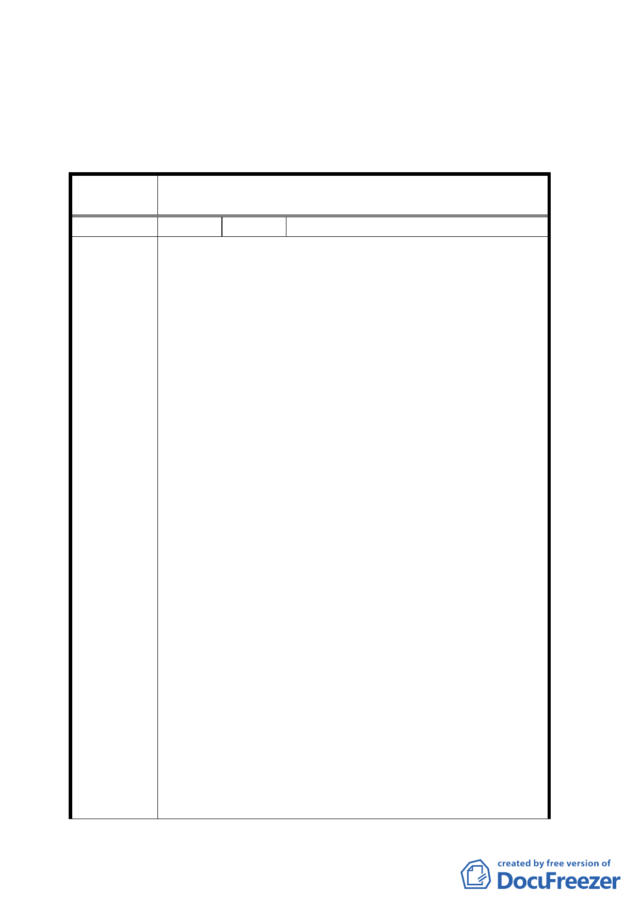

（二） 計畫說明書應補列原公展案本會審議過程。
二、公民或團體所提意見審決如后附綜理表。
臺北市都市計畫委員會公民或團體所提意見綜理表
案 名 變更臺北市捷運松山線 G22 車站第三種商業區土地為交通
用地計畫案
編 號 １ 陳情人 李玉蓮等十二人（交一）
一、 松山市場為公有地，應列為第一考量目標，將預定之
相關捷運設施，精確規劃設置其中，避免與民爭地，
否則明顯牴觸「土地徵收條例」第一章第一條中「保
障私人財產」之條文。
二、 松山市場以東，刻意避開與市場相連的通道與兩間門
號不予土地變更，市場以西與預定之捷運出口相連，
並同為平房之土地，亦不予選定變更，卻選定與市場
不相連之三間商業區土地予以預定變更，徒浪費資
源，明顯有瀆職及圖利上述市場兩側地主之嫌。
三、 市場對面原東星大樓，現為平地，全無拆遷問題，地
點位置絕佳，不予慎重考量，卻選定地點不宜且須拆
遷之現訂目標，可議之處昭然。
四、 若欲選擇不相連之標的，則緊鄰的松山農會為公有地
（目前出租營利），地理位置佳，應予優先考慮，否
陳情理由
五、
則有官與民爭地之嫌。
九十三年一月六日假松山區公所 11 樓舉辦之說明會
會中提及曾與相關人士協商。地主為利害關係人，卻
於變更計畫公告前完全不知情，明顯有欺瞞之嫌。
六、 建議人為現訂變更計畫中編號「交一」之土地、建物
所有權人，不同意該土地變更計畫。
七、 若無絕對必要變更、拆除之確切證據佐證，土地、建
物所有權人必對相關單位及人員提出瀆職、利益輸送
等之控告，據理力爭到底。
八、 申訴人基於維護本身權益及協助都市優質發展，於協
調會後每日利用公餘，積極蒐集預定車站出口周邊地
籍資料、現況發展情形，並詢求多位捷運工程專家意
見，完成評估建議如下：
（一）「現計畫徵收之商三私人土地」與「現松山農會用地」
之比較：依「地理位置」、「現房屋狀況」、「佔地面
積」、「環保評估」、「都市發展評估」、「土地所有權
三五